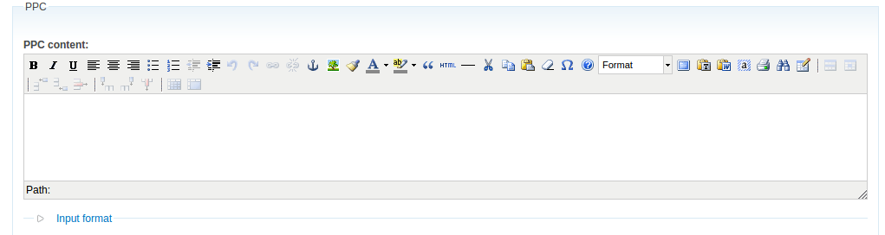

Part case-study and part explanation of experiences and discoveries from more than a year of using Drupal as an agile tool to fix legacy publishing workflows, process content and deliver/receive content from a variety of sources
Created by: Chris Hall / @cwork-chris
Slides can be found: https://github.com/chris-hall-hu/Drupal-Content-Swiss-Army-Knife-talk
Also bought to you by:
I have spent the last couple of years working with Atom Content Marketing and their various clients, Tim Worked with me for some of this time.
Further notes about slides will often be found at the bottom of the vertical slides, even when not directly presented.
Prior to Drupal, I had already worked with a variety of technologies and frameworks, going back into the mists of time, Cold Fusion, Perl, Java based etc.
Previous experience of Drupal not always good, in some projects and situations Drupal worked well, in others not! I have been using Drupal for longer than my three years on Drupal.org, it started as a tool, then became everything. My first involvement with Django was joining a project that somebody had saved from a Drupal disaster by starting from scratch. The project was about data-processing and a normal Drupal approach did not work (happy to discuss over a beer). Many Drupal projects have gone well however.
As an early part of the work I had to do involved taking over and finishing an ExpressionEngine site and there were existing Wordpress sites as well as Drupal, I even had to ask whether I should be using Drupal at all going forward. Especially as I felt I was becoming a Drupal only developer and that didn't feel entirely healthly.
Actually some of these issues I had already seen in previous work.
Not everything surprisingly (can I say that here?)
"With Drupal typically the first 90% of a project takes a week, the remaining 10% can take anything from a week to 3 months" (me)
"With Drupal features are cheap and details expensive" (WunderKraut)
This WunderKraut blog How to fail in a Drupal project: Fixed price contracts says most of what I feel after years of Drupal. If someone hands you a beautiful PSD designed project and says make it so, you really may be better off with a more light-weight framework. (nobody going to drag me off the stage...?)
There are many linkouts for this talk, but don't worry all the links are on a slide at the end :)Jumping forward to the imminent release of Drupal 8 to look back on Drupal 7
The key difference should be to make it easier to find Drupal talent, currently Drupal has a long learning curve, even more worryingly even experienced Drupal developers may be taking different 'correct' but incompatible approaches (Panels, Context, etc. etc.) D8 will use some existing frameworks and more mainstream PHP design practices.
An agile tool should not require an extensive learning curve before it becomes useful.
Some of the biggest current weaknesses of Drupal are to be addressed
Although it my seem harsh to say that Drupal is hard to learn, particularly for someone who is already an insider, I have encountered too many designers/frontenders who attempted to use Drupal to extend their repetoire, crashed and turned to Wordpress or similar, I have encountered too many agencies moving from Design to full service and crashing with Drupal, turning to Wordpress or ExpressionEngine or Modx ....
Note: I have not really talked about the Drupal community (which is a marvellous thing in it's own right) but when looking to use a tool you shouldn't expect to have to join a 'support group', community support and the inertia to pull in the contrib. modules will be vital to D8 success though I think.
Some of the things we can do very easily to start building our own content management system.
Drupal has the most comprehensive administrative functionality for modelling content of any of the frameworks/tools I have used.
The screen below is from Drupal 8, note that Drupal 8 improves things for the non-developer because a few more fields like email, date and entity reference are included in Core.
Content fields can have lots of options
Without lifting a finger we have user management, revisioning, roles and permissions.
Add a couple of modules such as Diff and Workbench, already we are building a powerful content system.
Workbench allows us to add stages and users to a custom editorial workflow, diff is a nice little addition that allows users who can see revisions to visualise changes between them.
The ease with which you can apply multiple taxononomies in Drupal and the tools surrounding them are not often found elsewhere.
Although sometimes a little help from a module such as Taxonomy Manager can help to organise them.
Once we build a large volume of content we have use of the powerful Views module help filter and sort.
I am confident that everybody will be familiar with views, more on the subject laterThe search that comes out of the box with Drupal is not too horrible, it will be vastly enchanced however by adding the Search Api and Facet API module
Search API can vastly enchance search even without the addition of Apache Solr
Search API and the various modules that work with it can be used to build powerful searches even without the aid a Apache Solr, although not as performant this may suffice if traffic is moderate and will certainly suffice for testing and development.
We can do better though...
Jeni Tehan has an excellent talk on Building a Tasty Backend that suggests how to significantly improve the content authoring experience using available modules and techniques.
You may even reduce the amount of evilness in the world ;)
I have encountered more than one case of content being collated, gathered and edited in Excel spreadsheets prior to website developement.
One agency that was going to build a cheap Wordpress website for a friend of mine even advised setting up a spreadsheet to prepare his content (he was putting all the data from one catalog entry into a single cell).
How quickly could you set up a simple Drupal site for data-entry on a $5-$10 VPS? (the answer is very easy of course)
Getting the content out comes later.....
Or maybe build a theme on top of it, the content could inform your Design/UX/UI process (sorry Wordpress, but we will get back to you later.)
Developers have all the admin tools that non-developers have but they have opportunities to write code.
A developer writes PHP somewhere, Drupal provided hooks etc. I like to think of Drupal without custom code as a 'Ready Meal'
Why do I often sense resistence to this level of training?
Perhaps because then they will realise there is hardly any custom code in many sites :P
Actually most of the custom code on many sites is CSS, HTML and JS.
The command line seems to be stonger than ever, perhaps because OSX has a decent one, because Designers and Frontend developers are setting up Ruby and CSS pre-processors plus other workflow tools.
I am assuming that most people don't need need to be introduced to Drush a PHP command line tool that has many commands for Drupal aside from the standard module downloading, installing disabling etc.. Many contrib modules (Features and Migrate for example) provide Drush commands that are often easier/faster to run than via the normal admin interface.
Create a quick backup in your home directory:
$ drush sql-dump > ~/backup.sql
Load a quick backup:
$ drush sqlc < ~/backup.sql
You can script the Drush commands with a shell script if you wish
Note: a dev tool, not a replacement for Backup and Migrate module or server backups
Create a php file and run it from the command line against Drupal using Drush.
$ drush scr foo.php
This will load a node and spit out on the command line
$node = node_load(100);
print_r($node);
Load some nodes and iterate over them:
// Note: this is rubbish deprecated slow ass way to load nodes.
$nodes = node_load_multiple(array(), array('type' => 'production_content'));
// Iterate over the nodes and reprocess them.
foreach ($nodes as $node) {
// Do something with each $node you evil genius you.
node_save($node); //muhahahaaaaaa
}
You can make this as complicated as you like, refine the selection process, etc. improve the code.
You can use Drush to experiment quickly with D8 code.
D8 also works with Composer the PHP package manager (I believe you can now use composer to manage libraries in your modules)
There is also the Drupal 8 console code that is growing all the time, basically watch this video and be amazed :):) This will generate all the boilerplate code for modules, service, routes, plugins, blocks etc. for you on request.
Yes if you don't code PHP or want to set something up for somebody you can do some neat stuff with Views Bulk Operations
There is so much more you can do with code though.....
If you are a developer and nothing springs to mind at this point then ......
Let me sweeten the deal a little!
 WYSIWYG the epitome of evil!
Querypath is a PHP library that allows you to load in HTML and XML documents and work with them in a similar manner to JQuery. There is even a Drupal Querypath module that makes things a bit easier to make the library accessible to your code.
You can in theory correct/adjust just about any html in a field, and fix most of the atrocities caused by hand edited html or WYSIWYG editors (because some people are going to just try to put an html page into your body field).
$content_body = '' . $content_body . '';
$qp_options = array(
'convert_to_encoding' => 'utf-8',
'convert_from_encoding' => 'utf-8',
'strip_low_ascii' => FALSE,
);
$qp = htmlqp($content_body, NULL, $qp_options);
$imgs = $qp->top('img');
foreach ($imgs as $img) {
$img->remove();
}
$node->body[LANGUAGE_NONE][0]['value'] = $qp->top('body')->innerHTML();
You can do more complicated things such a removing old-school named anchors and placing their anchors as ids on their parent element (just an example), the sky is the limit really.
And of course you can manipulate the html (or XML) anywhere you write code, not just in some crazy script
I think I am now comfortable with what I should be using Drupal for and Drupal 8 (with a bare minimum of contrib modules) should be even better for the job .........
Any easy questions?